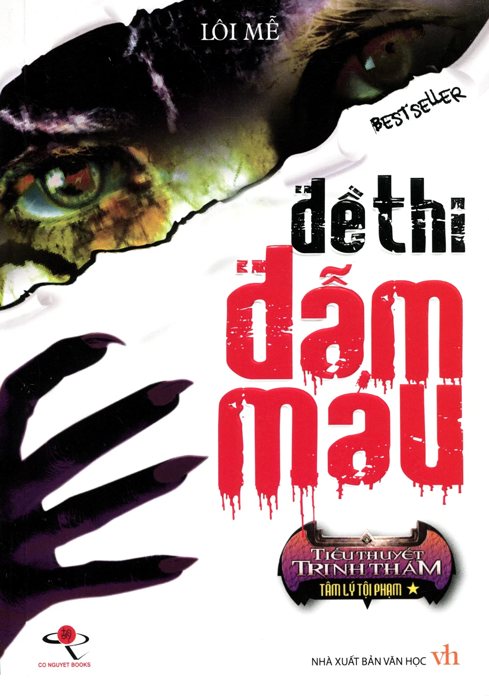

REVIEW SÁCH
Đề thi đẫm máu
Nhận xét của mình
Trinh thám Trung cho mình cảm giác rất khác với trinh thám Nhật bởi yếu tố hình sự cảnh sát và những vụ án hóc búa. Cuốn sách nói về cuộc sống của cậu sinh viên đang học thạc sĩ tại một đại học sư phạm về tâm lý học tội phạm tên Phương Mộc. Cậu bị cuốn vào các vụ án nhưng với tài năng trong tâm lý học tội phạm, Phương Mộc đã giúp đỡ cảnh sát rất nhiều. Cho đến khi anh vướng vào một vụ giết người liên hoàn tại chính trường đại học anh đang theo học. Các tình tiết giết người cho thấy hung thủ là người bệnh hoạn và coi mạng sống con người không khác gì cỏ dại. Hành trình đi tìm kiếm hung thủ qua những vụ án và sự ra đi của những người quen của Phương Mộc như một bộ phim hành động. Trinh thám Trung thường thiên về điều tra, phá án và hành động hơn là tạo ra những bí ẩn và plot twist như trinh thám Nhật. Có lẽ bởi tác giả của Đề thi đẫm máu là một giảng viên trong một trường cảnh sát. Mọi người nên đọc thử nhé